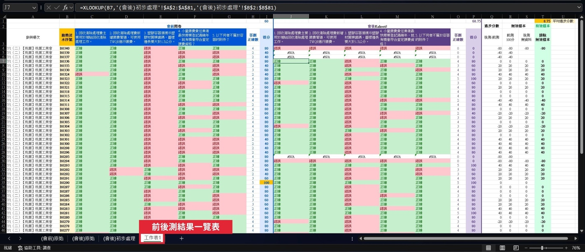
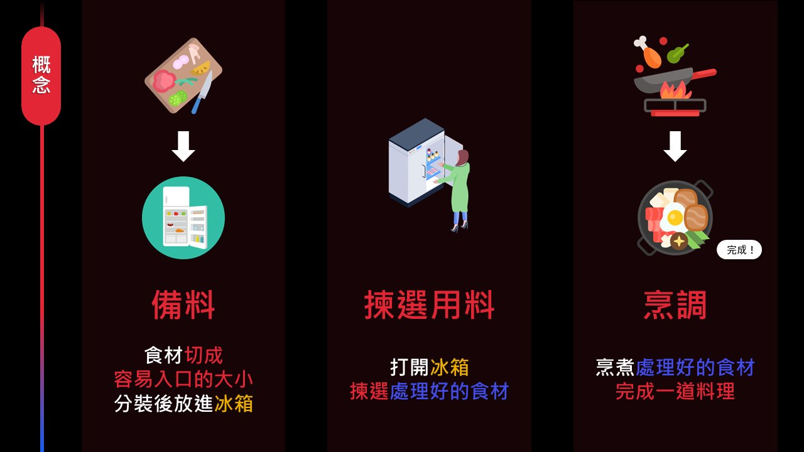

吳思穎 Alice Wu
應徵職缺：justfont 行政營運專員 ｜ 專案執行人員個人資料：女 ｜ 30歲 ｜ 總年資 6~7 年工作經歷
就業狀態：待業中（錄取後一週可上班）
主要手機：0958-321-139
E-mail：ichbinalicewu35@gmail.com
通訊地址：新北市土城區學士路
最高學歷：私立輔仁大學 中文系 ＆ 德文系 雙學士
自我介紹 Cover Letter
[行政營運專員] 吳思穎
您好，
我是吳思穎 Alice，有約6年專案行政與活動營運經驗。看到 justfont 徵求行政營運專員，想誠摯地投遞應徵。
我對 justfont 的認識，是從使用粉圓體開始的。Google 文件能用粉圓時，我非常開心；後來也追蹤了Instagram，蘭陽黑體的「信任遊戲」短片讓我印象深刻。我喜歡在穩定架構下又帶有個人風格的字體，也相信不同情境適合用不同字體表達情緒，所以選擇越多越好。小時候的硬筆字比賽多半以標楷體為標準，我的美感也是很晚才開始累積，所以特別珍惜 justfont 讓更多人接觸到多元字體的努力。
在過去的工作中，我習慣把重複、容易出錯的事情整理成清楚的流程。例如我設計了說明會核銷的試算表範本，讓年底整理時間從約一個工作天縮短到半天內，後來被會計推薦給其他專案參考；也設計過前後測成效統計表，讓每場結束就能看見結果並調整課程。參與專案 AI 客服導入時，我也學到什麼工作適合交給 AI、什麼工作不必，曾建議某個名單篩選流程用調整邏輯與程式自動化處理即可，確保名單的正確性可控，不必全部交給 LLM，意見後來獲得甲方採納。
我的客服經驗以電話與面對面為主，文字客服、收款與開立發票、合約審閱的實務經驗較少，這幾項我很願意學習，也習慣在遇到沒做過的事時先查資料，再整理成可重複使用的做法。
隨信附上履歷，期待有機會與您現場面談。
祝 徵才順利
吳思穎 Alice
行政工作實績與佐證說明 Work Experience & Evidence
（環資國際有限公司 5年8個月 專案執行實務紀錄與成果截圖）
01. 帳務與核銷
負責年度說明會（10～15 場）經費的預算編列、預支、請款與核銷，涵蓋場地、餐盒、交通、住宿、郵寄等項目，年度總額約 10 萬元、核銷細項約 100 筆。
自行設計雲端試算表記帳範本並附填寫說明，由經手同事於活動期間逐筆登錄金額與憑證轉手人員；年底核銷整理時間由約一個工作天縮短至半天內，憑證遺失時可追溯。範本經會計推薦給其他專案參考。

02. 試算表與資料管理
● excel資料庫與 Word 合併列印批次作業：
具備 Excel 樞紐分析、IF、COUNTIF、XLOOKUP使用經驗；建立郵寄資料主清單搭配 Word 合併列印，批次產出活動場地包裹標籤、獎品寄送與行前通知，整合原本分散於各資料夾的重複資料，減少批次處理的人為錯誤。

● 說明會學習成效統計表（四層試算表架構）：
設計說明會學習成效統計表（年約 1,000 份問卷）：以自編抽獎流水號串接前後測資料，建立「貼入原始資料即自動計算」的四層試算表，訂定資料比對規則（無法對應者人工檢視後剔除）；成效結果由年底統整提前至每場結束即可得出，並依各題答錯率調整下一場講課重點；完成操作說明並交接。



03. 流程、文件與檔案
自訂檔案分層與版本規則（年度＼工項＼文件標題＼編輯日期＼版本），為所做工作撰寫備忘與交接說明，離職前以文件與存檔路徑完成交接。
負責專案進度報告與請款之公文撰擬與提送（參照既有範本；遇無前例類型時自行查閱規範），並協辦年度說明會場地租借合約。
04. AI 與自動化
參與專案 AI 客服導入（2026年 1 月上線）：比較多種 LLM 與 embedding／RAG 方案並建立測試紀錄；針對電話紀錄與常見問答兩種資料測試三種組合，採「電話紀錄之提問＋常見問答之回答」，以涵蓋多樣真實問法並降低誤答；擬定資料庫整理 SOP 與清洗流程，資料品質不佳時改向第一線客服徵集常見問答；由 20～30 位同仁參與、累計至少 3,000 筆測試，依題型統計準確率（單一題型達約 90%），並依結果調整資料。
使用 Dify 自建 AI 工作流，便於追蹤與除錯；撰寫 AI 技術科普與導入評估報告，協助承辦單位決策。
協助評估名單篩選流程自動化：研究過往作法後，建議調整判斷順序並搭配程式自動化，無須全面交由 LLM 處理，經報告後獲採納。
● 大語言模型 (LLM) 測試工作分享簡報（共 6 張投影片實績）：




05. 活動營運與溝通
統籌年度說明會報名前置作業：整理場次、時程與報名須知供官網上架，自系統後台彙整報名人數估算講義數量，並製作簽到表、工作人員行前通知與場地動線／站位示意圖。
擔任專案電話客服代班（每日約 10～20 通），並每年兩度、各連續約一個月每日至少 20 通外撥電話向業者說明新政策，執行 5～6 年；每年至少擔任 3 場說明會講師，課後面對面回答 5～20 位業者的法規與申報問題。
處理報名與客服資料時採最小揭露原則：簽到單僅列公司名稱、統編與人數；建立 AI 客服資料庫時過濾含聯絡人姓氏、營運狀況與密碼的內容。
受主管邀請於公司內分享 AI 客服測試心得與線上說明會控場流程；整理之場地名單於組內流通，主管並轉介他組同仁來諮詢。
學經歷時間軸 Experience & Education
埃恩歐設計顧問有限公司 (IMO Architecture + Design Ltd.)
2026/5 ～ 2026/7（3個月）行政秘書 ｜ 台北市大安區 ｜ 建築設計業 1~30人
- 行政庶務：電話接聽與轉接、信件收發與郵寄作業。
- 辦公室與設施管理：辦公室環境維護、辦公用品訂購與庫存維護、辦公室租賃事務管理。
- 人事與財務行政：人員出缺勤紀錄、零用金管理、二代健保補充保費申報。
- 數位內容管理：公司網站文章更新與維護。
※ 公司主管為西班牙籍、同事包含美籍人員，日常溝通以英文為主、中文為輔，具備雙語溝通基礎能力與經驗。
環資國際有限公司
2020/8 ～ 2026/3（5年8個月）環境工程師 / 專案執行 ｜ 台北市萬華區 ｜ 工商顧問服務業 100~500人
- 年度宣導活動統籌（虛實整合與流程標準化）：全台巡迴說明會 10-15 場（總人次約 1,000 人）線下活動控管與預算支出；Google Meet 350 人線上會議串流與標準作業流程；導入 Kahoot! 與 Excel 即時問卷分析並編製操作手卡；擔任講師與主持人應對業者提問。
- 教材編撰與文宣規劃（資訊轉譯與視覺化）：研讀環保法令原文，分析新舊法規差異，重新取捨編排年度宣導重點；運用 PPT 進行圖文排版結構化法令文字，以 5W1H 原則撰寫社群宣傳圖卡文宣。
- 客服系統轉型（LINE@ 轉型到 AI 客服產品落地）：LINE@ 官方帳號分流（線上初篩、電話深談）；使用 Dify 平台進行 LLM 應用、專案知識庫架構設計與 AI 工作流建置；擔任「業務需求端」與「技術端」轉譯窗口。
德利威電子股份有限公司
2019/7 ～ 2020/2（8個月）行政櫃台／文管（約聘） ｜ 新北市中和區 ｜ 其他金屬相關製造業 500人以上
- 行政：電話接聽與轉接（過濾來電）、固定費用請款、零用金管理、機器叫修、用品訂購、郵局寄件、接待訪客、訂購餐點。
- 文管：負責一般文書資料處理及歸檔工作；收發文件、會簽文件追蹤（ECR/ECN）；產品圖面發行與更新；客戶承認書資料彙整與建檔。
私立輔仁大學
2014/9 ～ 2019/6雙學士
- 中國文學系 大學畢業（2014/9 ～ 2018/6）
- 德語語文學系 大學畢業（2015/9 ～ 2019/6，雙學士）
證照與技能 Certifications & Skills
【專業資格認證】
- 陸上運輸相關證照：普通小型車駕照 中華民國交通部公路總局 4011510151103（2026/10 ～ 2065/12）
- 英語相關證照：TOEIC (多益測驗) 860 分 聽力 465 / 閱讀 395（2019）
- 其他語言證照：FLPT (德語檢定) 筆試 237分 (B2) / 口試 S2 (B1)（2019）
- 全方位基礎人力資源管理師認證 社團法人中華人力資源管理協會
【擅長工具與語言】
辦公室應用：PowerPoint、Word（合併列印）、Excel（樞紐分析、IF、COUNTIF、XLOOKUP）、Outlook
數位協作：Dify (AI 工作流與知識庫)、Google Meet、LINE@ 官方帳號、Kahoot!
- ・英文：中等（聽/說/讀/寫 具日常英語工作溝通能力）
- ・德文：中等（聽/說/讀/寫 雙學士）
- ・台語：略懂